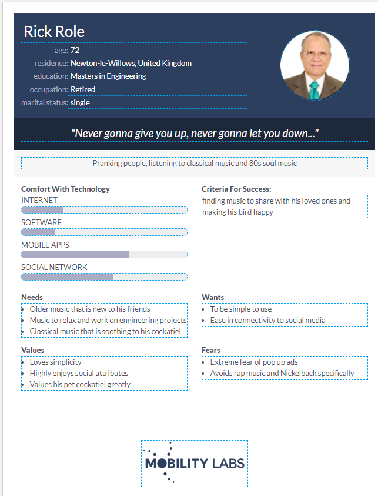
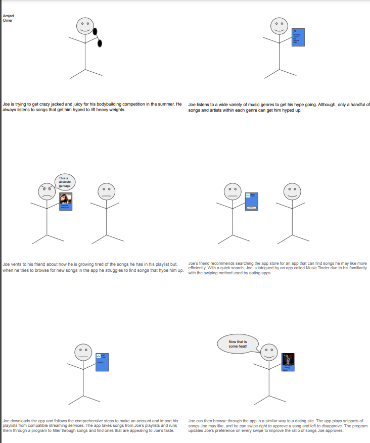
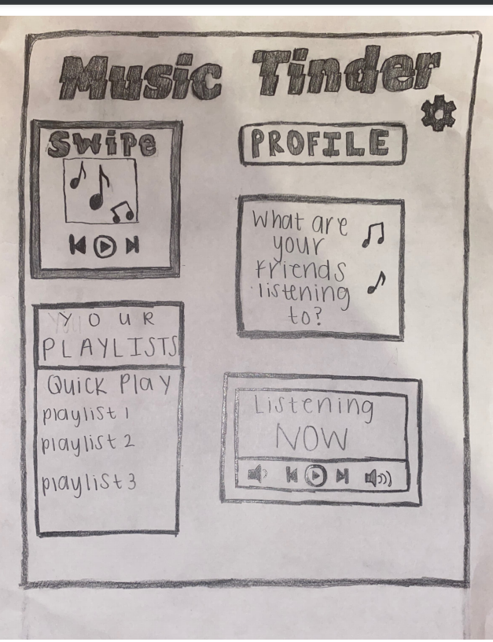
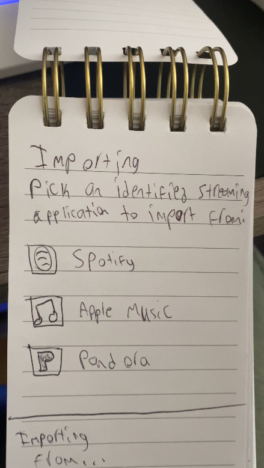
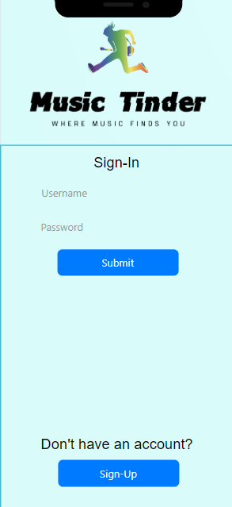
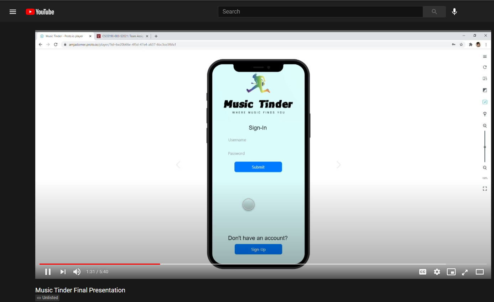

Problem Statement: Music Tinder

Finding new music that you enjoy easily has become too much of a hassle and includes too many oversaturated songs and styles. People want to find new music that intrigues them and stands out without having to do deep searches for them.
Affinity Diagram: Music Tinder

A jamboard of the various features and attributes desired for the app was constructed by the group.
Personna: Rick Role
A persona for an older music tinder app user.
Storyboard: Music Tinder
A storyboard of a bodybuilder becoming a music tinder app user.
Sketches: Music Tinder
Some sketches of the type of UI a Music Tinder user would see.
Paper Prototype
A brief paper walkthrough of how every screen in the app may roughly look.
Hi-Fi Prototype: Music Tinder App
A high fidelity prototype of the Music Tinder app in action.
Final Prototype Presentation
A full presentation of the final prototype of the Music Tinder app.